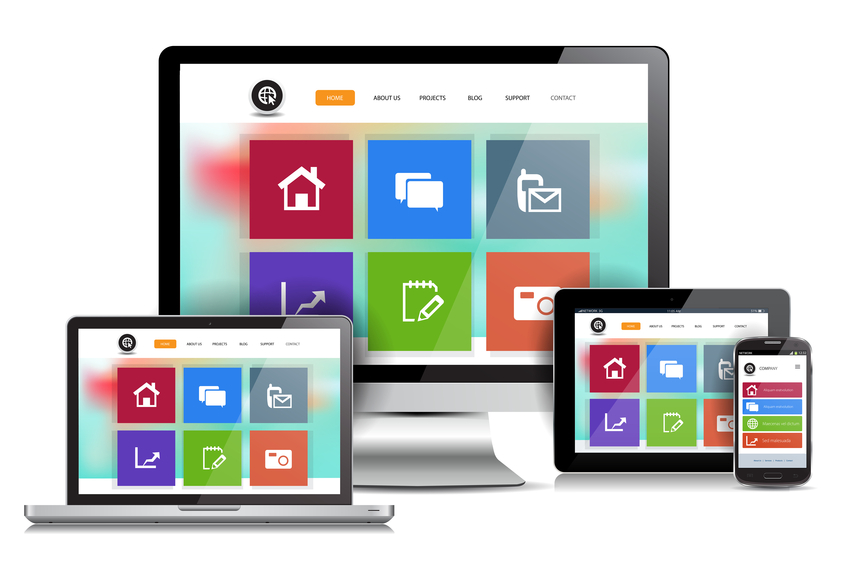

Com o avanço crescente da tecnologia, as organizações e a própria sociedade fica cada vez mais dependente da TI. Paradas em serviços de TI podem gerar graves consequências para as empresas, com um impacto financeiro severo. Um acontecimento como este faz com que dirigentes deixem de confiar nos serviços entregues pela TI. Por isso, a responsabilidade dos gestores de TI é enorme. Para evitar estes problemas, é preciso estar atento a algumas métricas e análises, como os relatórios de disponibilidade e capacidade. Saiba neste post o que são estes relatórios, para que eles servem e como podem ajudar a sua empresa!
A demanda por profissionais dessa área no mercado de trabalho se encontra em alta. Isso vale tanto para quem quer seguir carreira dentro de empresas (públicas e privadas) quanto para aqueles que desejam prestar serviços como freelancer. Você já se imaginou desempenhando algum desses papéis em sua carreira profissional? Continue lendo o post e conheça mais detalhes sobre as suas futuras atividades!
Sua plataforma no melhor estilo! Sites responsivos para serem visualizados por qualquer dispositivo.
Saiba maisSua aplicação com alta cobertura de banda, e maior disponibilidade para navegação e armazenamento em nuvem.
Saiba mais
Com vários sistemas de relatórios e consultoria, nosso sistema dispoõe o melhor para moniotoramento do sistema.
Saiba maisSite ou layout responsivo, ou também conhecido como site flexível é quando o site automaticamente se encaixa no dispositivo do usuário (PC, celular, tablet, etc).
Um site responsivo muda a sua aparência e disposição com base no tamanho da tela em que o site é exibido. Então, se o usuário tem uma tela pequena, os elementos se reorganizam para lhe mostrar as coisas principais em primeiro lugar. Em smartphones a navegação e experiência do usuário fica difícil e limitada tendo que usar recursos de zoom in e out para ler a página na integra. Outros detalhes como botões e menus ficam desformatados pois não foram feitos para esse dispositivo ou resolução.
Em dezembro de 2013 a empresa Comersite baseada em 40 clientes de diversas áreas fechou com uma média de 30% dos acessos via dispositivos móveis (tablets e smartphones)
A adoção da transformação digital implica muitos desafios como, por exemplo, por onde começar, quais os impactos nos negócios, entre outros, que têm assombrado muitos CIOs, diretores e demais executivos. Apesar das dúvidas e da insegurança que muitos estão enfrentando, sua adoção é um caminho sem volta, pois pesquisas de mercado apontam essa inovação como o principal pilar da chamada 4ª Revolução Industrial.
Mas como gerir de forma harmoniosa todas as novas tecnologias que a transformação digital traz para dentro das companhias, para que os desafios de adoção se tornem oportunidades de negócio? Primeiro temos de colocar de forma clara que a transformação digital não consiste apenas em transformar processos obsoletos em automáticos. Ela também contempla a aplicação de soluções tecnológicas para alavancar os resultados de negócios como, por exemplo, o big data, o business intelligence e analytics, os aplicativos, a mobilidade e, em especial, cloud computing.
Grande habilitadora de oportunidades, a nuvem também é o caminho para gerenciar esses ativos descritos acima nos ambientes de TI de maneira equilibrada, seja para processar dados não estruturados em máquinas virtuais como o big data, ou armazená-los e permitir a análise inteligente de grandes volumes de informação, como no caso do business intelligence. O cloud computing consegue unir o diferencial competitivo de cada solução em um único lugar para entregar melhores experiências aos usuários.

Com o avanço crescente da tecnologia, as organizações e a própria sociedade fica cada vez mais dependente da TI. Paradas em serviços de TI podem gerar graves consequências para as empresas, com um impacto financeiro severo. Um acontecimento como este faz com que dirigentes deixem de confiar nos serviços entregues pela TI. Por isso, a responsabilidade dos gestores de TI é enorme.
O relatório de disponibilidade permite analisar situações em que problemas aconteceram, qual o período, recorrência e se existe alguma correlação que pode ser inferida através dos relatórios. Também permite identificar investimentos a serem realizados de acordo com a importância da disponibilidade para os serviços entregues, além de saber a sua viabilidade. Também auxilia os gestores a implementar e gerenciar a estrutura de TI para atender o nível de disponibilidade exigido por cada tipo de empresa, fazendo inclusive o gerenciamento de serviços terceirizados para garantir os contratos. A disponibilidade depende de itens como:
A análise de relatórios e métricas é fundamental para gerenciar recursos e orçamento em TI. Ao acompanhar os relatórios de disponibilidade e capacidade é possível, por exemplo, gerenciar melhor os recursos, prevendo esgotamentos e relocação de serviços, fazendo um melhor uso do orçamento e reduzindo os custos com possíveis correções de falhas. Neste post, você aprendeu o que são os relatórios de disponibilidade e capacidade, para que eles servem e como eles podem ajudar na gestão da sua empresa. Analisar relatórios é fundamental para gerenciar recursos. Por meio destes dados, você pode tomar decisões que aumentem a qualidade dos serviços prestados sem perder de vista a redução de custos.
Programação WEB 1 | 2017